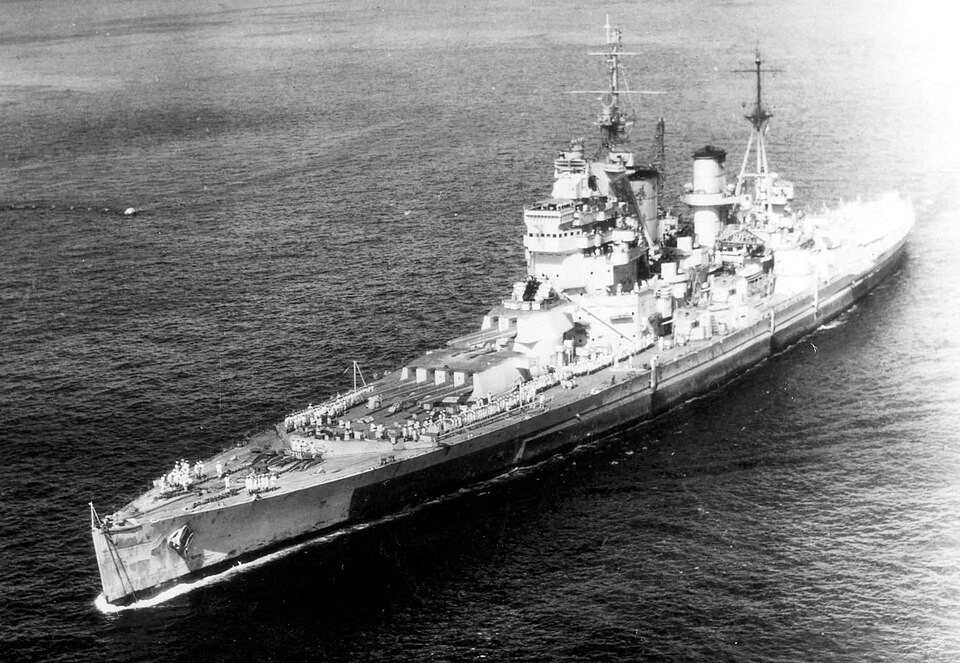

HMS King George V
Acorazado de Reino Unido, perteneciente a la clase King George V. Fue uno de los acorazados británicos modernos de la Segunda Guerra Mundial y participó en el combate final contra el Bismarck.

Diseño y función
HMS King George V pertenecía a la clase King George V. Combate de superficie y cobertura de fuerzas navales. Sus prestaciones se detallan en la tabla técnica, con las fechas o condiciones disponibles en la referencia.
Operaciones y trayectoria
Fue uno de los acorazados británicos modernos de la Segunda Guerra Mundial y participó en el combate final contra el Bismarck. Posteriormente operó en el Mediterráneo y en el Pacífico.
Destino final y conservación
Pasó a la reserva en la posguerra y fue desguazado a finales de la década de 1950.